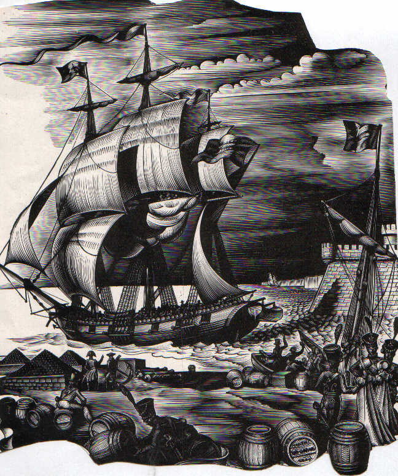

HENRY sieur de La BORDERIE et Dlle DELHOUME
UN GRAND MARIAGE à ANGOULEME en 1766
Marcel DOUYROU (33)
Le quatre septembre 1766, une cinquantaine de parents et d’amis sont conviés au domicile du sieur Achille Nicolas DELHOUME de LAGROIX négociant paroisse Saint André et de son épouse Andrée Courly pour assister à la signature du contrat de mariage de leur fille puînée Françoise âgée de 19 ans avec Jacques Alexandre HENRY de La BORDERIE, négociant âgé de 26 ans, fils du défunt sieur Jacques HENRY inspecteur général de la Manufacture Royale des Papiers d’Angoumois1 et de feue Angélique Le Sueur , de la paroisse Saint jacques de Lhoumeau, d’Angoulème.
La future est dotée de la somme de 3.000 livres payable le lendemain de la bénédiction nuptiale et 1.000 livres dans quatre ans. Quant au futur époux il s’est constitué en dot « tous les biens qui lui sont échus par le décès de ses parents et sa portion des profits qui se sont faits dans la société d’entre lui, son frère, sa sœur et son beau frère et dont l’inventaire et partage qui sera fait, lui tiendra lieu de reconnaissance »2
Le contrat est signé par bon nombre de parents et amis .On peut citer :
Pierre CLEMENT AUGERAU cousin, François Lacour huissier cousin, Achille Nicolas de LAIRE cousin germain, maître Jean de LHOUME notaire royal et oncle paternel, Les frères SAZERAC, Louis l’aîné et Bernard le cadet, JOUBERT aîné, Ch de CABLANS, Michel LAPLACE, PRENERAUD curé, N.GILBERT docteur en médecine, médecin ordinaire du Roi, LHOUMEAU de LA FENESTRE, DEMAY père et fils, FAUCONNIER DEBRESME,
BOISSARD, MANCIE, LAROCHE de GIRAC, Etienne PENO horloger, LAVIELLE CHAUVIN, M.DUBOIS, ROBIN père et fils, etc..
Des femmes ont également signé Françoise, Jeanne et Madeleine de LHOUME, Andrée COURLIT, Catherine LAFONT, Marguerite et Anne LATOUR, Marguerite LEFORT, Jeanne BOYLAUD, Anne FLEURY, DELOUME LAGROIX, Marie et Margeurite PENOT, Anne PATELLIN, Anne GARNIER, Marie BUCHEY etc…
La cérémonie nuptiale dans l’église Saint André le 30 Novembre 1766.
De ce couple on connaît à ce jour la naissance à Angoulème en 1773 d’un fils Achille Nicolas, marié en 1816 à Michelle Aimée Gresseau. D’où au moins deux fils et une fille.
Il aura une vie assez aventureuse : soldat en Belgique, Italie et Saint Domingue. Passé ensuite à Cuba, La Nouvelle Orléans, Vera Cruz, il termine sa vie à La Havane connu sous le patronyme de Henriqué
Le couple quitte Angoulème et on le retrouve à Bordeaux en 17793 lors du baptême de leur deuxième fils Simon le 17 février qui a pour parrain le sieur Simon de LACOURT, imprimeur libraire (issu d’une dynastie d’imprimeurs connue depuis 1640 à Bordeaux) et marraine Etiennette Dartis de Lacourt. (belle signature du père de l’enfant)
Lorsqu’on habite Bordeaux, comment ne pas être tenté par l’aventure dans les Iles.
On retrouve Simon HENRY surnommé lui aussi Henriqué à Pointe à Pitre bien des années plus tard.
Il épouse le 8/06/1818 avec contrat chez Me Vauchelet notaire à Basse Terre Marie CLEMENT de LORNAISON (1786-1850) fille d’un gentilhomme de la Chambre du Roi.
Veuf, il contracte une seconde alliance le 31 mars 1852 avec Josephe Laure de Faucompré fille de Pierre Stanislas de Faucompré, écuyer, et de sa seconde épouse Marie Rose Eugénie Bacque.
Ce qui nous ramène à Bordeaux, car Pierre Stanislas de Faucompré né en 1759 à Bordeaux quitta cette ville, se fixa aux Antilles,puis passa à La Nouvelle Orléans où il décéda en 1812.
Il était le fils de Joseph François de Faucompré, natif de Lille, négociant à Bordeaux où il avait épousé le 10 mars 1755 Suzanne Farrouilh.4
Après les événements de Saint Domingue, les colons Français ont cherché refuge dans les îles voisines Martinique Guadeloupe, Cuba, La Jamaïque, La Grenade etc.
A Cuba beaucoup se fondent avec la population locale et optent pour la nationalité Espagnole.
C’est le cas de nos HENRY devenus Henriqué.
Toutes informations complémentaires sur les moulins HENRY et LHOUME en Angoumois, la vie et l’activité de ces hommes dans les îles seront les bienvenues.
(Remerciements à Jean Claude Soula et Jean Vriet pour leur aimable communication)
M.DOUYROU

Les délivrances au XVIII°siècle de passeports pour les passagers vers les îles sont dépouillées et consultables aux AD de la Gironde. On ne trouve pas trace d’embarquement au départ de Bordeaux d’HENRY de La BORDERIE.
1 Onze moulins à papiers s’étaient regroupés pour former La manufacture Royale des Papiers d’Angoulème de 1734 à 1763. Un moulin était exploité depuis 1740 par la famille HENRY.
« Recherche sur l’origine des moulins à papiers de l’Angoumois » Bulletin de la Sté Archéologique et historique de la Charente-1878-1879-
2 Inventaire et partage effectué en 1767 ou 1768 que l’on doit pouvoir éventuellement retrouver aux AD de la Charente.
3 GG 127 -1779- MI.D.2/28 paroisse St André de Bordeaux